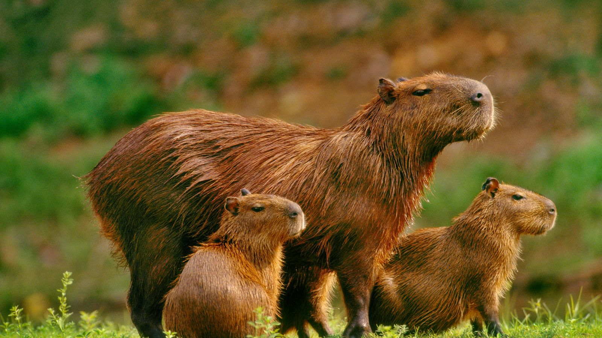
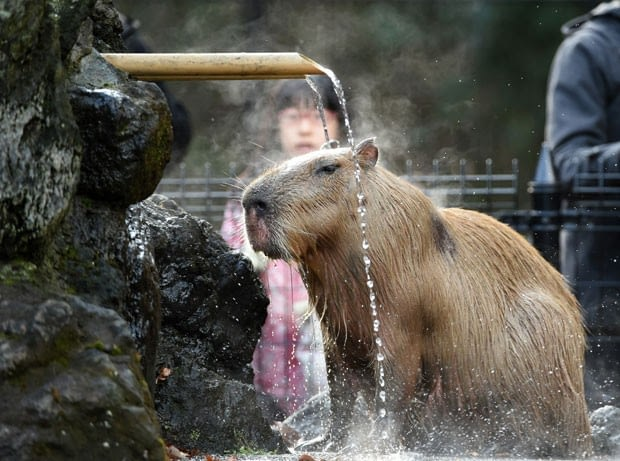

Capivara
O nome popular da capivara possui origem tupi-guarani e significa “comedor de capim”. A princípio, além de possuir um corpo robusto e musculoso coberto por pelos marrom-escuros, a capivara também tem um pescoço curto e volumoso. Inclusive, uma curiosidade sobre a espécie é que seus espécimes não conseguem girar o próprio corpo para trás. Ou seja, para fazer isso, a capivara precisa girar o corpo todo. Além dessa característica, a capivara, normalmente, apresenta o lábio superior semelhante ao de cavalo. Além disso, a espécie é considerada bem pesadinha, podendo pesar em torno de 30 kg a 80 kg. Acima de tudo, a capivara consegue atingir até 1,3 m de comprimento e 60 cm de altura. Aliás, justamente por isso, ela é considerada um dos maiores roedores do mundo. Muitos autores questionam se as capivaras possuem ou não rabo.
A capivara se trata de um mamífero, e recebe o nome científico, Hydrochoerus hydrochaeris. Basicamente, esse animal é nativo da América do Sul, em específico da faixe entre Panamá e Uruguai, exceto na Cordilheira dos Andes. Inclusive, ela gosta de viver em ambientes aquáticos. Como por exemplo, em regiões de rios ou córregos. Isso porque a espécie utiliza a água para se esconder de predadores, e também para se reproduzir.
Algumas imagens deste ser celestial:

